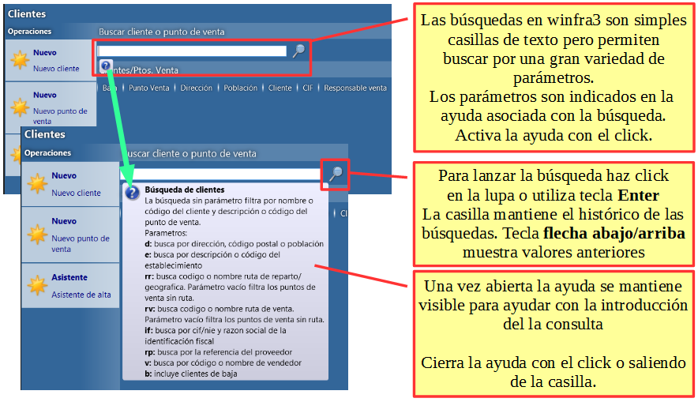

Búsquedas¶

Búsqueda de texto y códigos¶
Cada búsqueda define que busca sin utilizar ningún parámetro.
En caso de texto busca su cualquier ocurrencia. Para buscar valor exacto incluye el texto entre comillas dobles «. Puede utilizar el comodín * (asterisco) dentro de las comillas.
En caso de código busca el valor exacto.
Para evitar la búsqueda exacta del código utilice comodín * (asterisco)
La búsqueda no distingue mayúsculas y minúsculas, pero sí distingue los acentos.
Ejemplo de la búsqueda de clientes. Búsqueda de clientes busca por defecto el código o descripción de cliente:
hotel
encuentra todos los hoteles (por su descripción)
bar juan
encuentra todos los Bar Juan y ademas Bar Juanjo y Cafetería bar Juan.
"bar juan"
encuentra solo el nombre exacto, incluso teniendo en cuanta los espacios
"bar juan*"
encuentra Bar Juan y Bar Juanjo pero no la Cafetería bar Juan
100
encuentra solo cliente con el código 100
100*
encuentra cliente 100, 1001, 1002 etc., pero también las franquicias de “100 Montaditos”
En la búsqueda de artículos:
barril*50
encuentra tanto “Barril AMSTEL 50L” como “Barril 50L Heineken”
Búsqueda con parámetros¶
Los parámetros son normalmente una o dos letras separadas por : (dos puntos). Un separador alternativo es configurable en la [c]configuración de la aplicación|views/Ribera2.Shell.Views.ThemeConfigView.txt[c].
Después de : va normalmente el texto o código buscado o el parámetro se puede quedar vacío. Al texto buscado se aplican las mismas reglas de uso de * y de « mencionados en apartado anterior.
Se aplican las siguiente reglas:
Se permite cualquier combinación y orden de parámetros
Múltiples parámetros se separan con un espacio
Todos los parámetros se aplican al mismo tiempo
Para añadir un valor sin parámetro después de otros parámetros utiliza solo :
Ejemplo de búsqueda de con parámetro:
hotel d:valencia
busca todos los hoteles en Valencia
d:valencia :hotel
es equivalente al anterior. La búsqueda sin parámetro no necesita : si esta en primera posición
hotel d:valencia b:
busca todos hoteles en Valencia incluyendo los marcados de baja
rr:10
busca todos los clientes de la ruta 10
rr:
busca todos los clientes sin ruta
Búsqueda de la dirección¶
La búsqueda de dirección permite buscar por la calle, población y código postal. Separa la calle y población por coma.
d:46680
busca el código postal exactamente
d:mayor
busca por calle o población. Encuentra todas las plazas mayor y también Villamayor.
d:mayor, villamayor
encuentra solo la plaza mayor de Villamayor.
En caso que hay mas pueblos con el mismo nombre utiliza el código postal:
d:mayor, 46680
Para buscar solo el pueblo sin tener que utilizar el código postal utiliza el asterisco:
d:*, mayor
encuentra todas las calles de Villamayor.
Búsqueda por fecha¶
típicos parámetros para las fechas son fd: y fh: para fecha desde y fecha hasta. La fecha hasta esta incluida en la búsqueda.
La fecha puede estar representada de siguiente manera:
0 – hoy ej.: “fd:0”
10 – día diez del mes actual:
fd:01 fh:31
incluye todo el mes actual, funciona aunque el mes actual tenga 30 días
1005 – 10 de mayo de este año
100515 – 10 de mayo 2015
10052015 – 10 de mayo 2015
+3 – en tres días
-1 – ayer – suma o resta los días de la fecha de hoy
x – miércoles de semana actual (las letras de los días son lmxjvsd)
xx – miércoles de la semana que viene etc.:
fd:l fh:vv
desde lunes de esta semana hasta viernes de la semana que viene.
-x – miércoles de la semana pasada
Indicar solo fd o fh selecciona solo ese día. Utiliza * (asterisco) con una fecha para indicar el intervalo abierto sin indicar la otra fecha:
fd:01*
incluye todo desde día uno
fh:-v*
incluye todo hasta viernes pasado